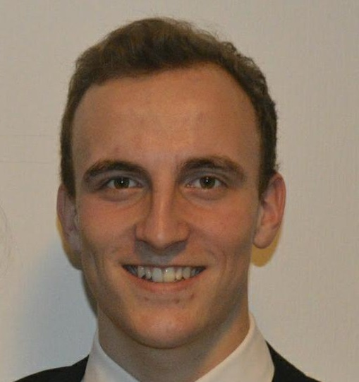
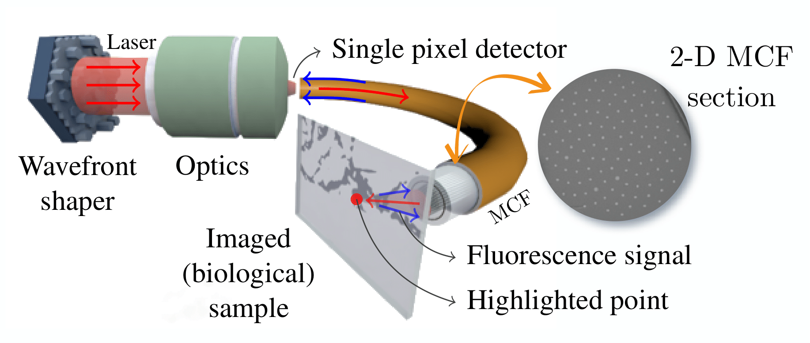
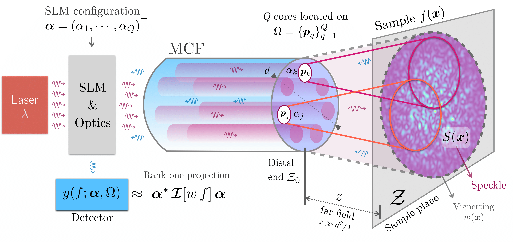

Olivier Leblanc
PhD student
The goal of my research project is to tackle computational imaging (CI) applications that suffer both from the ill-posedness of the imaging process and high computational and memory complexities. I decided to focus on fluorescent lensless endoscopy (LE) with ultra thin multicore optical fibers (MCF), extending the work of Stephanie Guérit, a recently graduated PhD student of my current supervisor, Prof. Laurent Jacques.
What is Lensless Endoscopy and what challenges does it raise?
The lensless endoscope (LE) is a promising device to acquire in vivo
images at a cellular scale. The challenges raised by LE are twofold: (i) first, the miniaturization
of this endoscope (its cross section amounts to a few hundreds of microns)
prevents it from direct imaging using a lens, both for manufacturing
and nonlinear optical effects issues (ii) second, the light actually
captured by the device represents a small fraction of the initially
emitted light, either by direct reflection or fluorescence (occurring
when the biological sample captures part of the energy of the incoming
light and re-emits it at another larger wavelength). Hence, one requires
to provide sufficient illumination power combined with a sensitive
enough light sensor to hope for satisfying image reconstruction.
These issues make LE still an open-problem for provable recovery and
real-time usage in concrete biomedical applications, compared to more
matured applications such as MRI, confocal microscopy and refraction
tomography.

What problems do I focus on?
Here are some axes I'm considering for my PhD research:
- interferometric Lensless Endoscopy: Including the physical constraints of a LE, I refined the sensing model for a 2D object, introducing the physics of electromagnetic wave propagation, more precisely the Rayleigh-Sommerfeld equation in the Far-Field assumption, for now. This new model called Interferometric Lensless Endoscopy (ILE) brings multiple advances both in a theoretical and practical point of view.

- Tomographic lensless endoscopy: LE is so far limited to the observation of planar objects perpendicular to the optical fiber distal end (see Fig. 1); and this is still the case with the ILE model described above. I plan to extend this modality to tomographic LE (TLE), namely to the estimation of a biological sample volume (the density of fluorophore) by collecting the light re-emitted under a controlled illumination pattern. Depending on what can be done in 3D with the ILE model, I will either model the forward acquisition using a 3D extended ILE model or with a physically-driven neural network (NN), where the NN activation functions represent light-matter interaction, and the NN weights correspond to a discrete 3D representation of the sample.
- Improved TLE modeling with generative networks: TLE crucially depends on (i) an accurate model for the illumination pattern used to probe the biological sample, and (ii) a suitable representation of the sample volume to regularize the related inverse problem. I will tackle the first point by learning the transformation of the wave front operated by the MCF, using a supervised (or inferent) generative network (s-GN) learned in an offline calibration stage. The second point will be solved by leveraging unsupervised GNs (u-GNs) and their highly compressed latent space representation. These appealing alternatives to analytical representations of images (such as sparse wavelet representation or low-rank models) will be learned with generative adversarial networks or variational autoencoders.